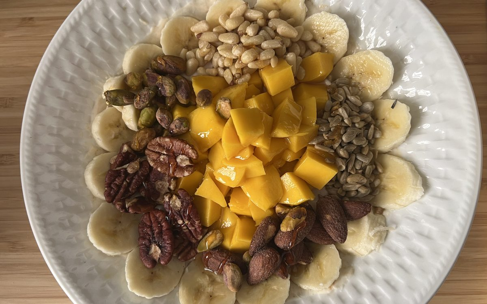

Makhana Guides
Makhana vs Almonds: Which Is the Healthier Snack?

The makhana vs almonds debate is really a question about what you want from a snack. Both are wholesome, plant-based and a world away from fried namkeen, but they are built very differently. Makhana (foxnuts, or phool makhana) is a light, airy, low-calorie seed that is naturally low in fat. Almonds (badam) are dense, rich in healthy fats and packed with protein. So makhana or almonds, which is better? It depends on your goal — and below we settle it with real numbers, not hype.
Quick answer
- Makhana wins on calories and fat — about 347 kcal/100g and almost no fat, versus 579 kcal/100g for almonds.
- Almonds win on protein density — roughly 21g per 100g against 9–14g in makhana.
- For weight loss, makhana is the lighter, crunchier, lower-calorie pick.
- For gym, healthy fats and vitamin E, almonds edge ahead.
- Both are low-GI, gluten-free and diabetes-friendly in sensible portions.
In short, neither is a loser. If you are watching calories or want guilt-free volume, makhana is the smarter swap. If you want concentrated protein and healthy fats, almonds deliver. New to foxnuts? Start with What is Makhana? The Complete Guide to Foxnuts, or see the full breakdown in our Makhana Nutrition guide.
Makhana vs almonds: the nutrition face-off
Here is the head-to-head most people are searching for. The figures below are typical values for raw/plain versions; seasoning and oil change the picture slightly. Note how the story flips depending on whether you compare by 100g or by a realistic handful.
| Nutrient | Makhana /100g | Almonds /100g | Makhana /handful | Almonds /handful |
|---|---|---|---|---|
| Calories | ~347 kcal | ~579 kcal | ~90–100 kcal | ~160–170 kcal |
| Protein | 9–14 g | ~21 g | ~3 g | ~6 g |
| Fat | ~0.1–1.5 g | ~50 g | ~0.4 g | ~14 g |
| Carbohydrates | ~76 g | ~22 g | ~22 g | ~6 g |
| Fibre | ~7 g | ~12 g | ~2 g | ~3.5 g |
| Key minerals | Magnesium, potassium, calcium | Magnesium, calcium, vitamin E | — | — |
| Glycemic index | Low | Low | Low | Low |
| Typical price | Mid (₹ per 100g) | Higher (₹ per 100g) | — | — |
The takeaway: on foxnuts vs almonds protein, almonds win per gram. But on calories and fat, makhana wins by a mile — which is exactly why it has become the go-to low calorie nuts alternative for people who want to snack often without overshooting their day.
Protein: makhana vs badam
Almonds are the clear protein champion at around 21g per 100g, nearly double makhana's 9–14g. For anyone chasing a daily protein target, badam is more efficient gram for gram. That said, makhana still earns its keep: it offers respectable plant protein for a fraction of the calories, so you can eat a generous portion and stay light. For more on the protein and calorie math, see our deep dive on makhana nutrition, calories and protein.
Calories and fat: the makhana advantage
This is where makhana shines. Raw makhana is roughly 347 kcal/100g with almost no fat, while almonds carry about 579 kcal and 50g of fat per 100g. The almond fat is the healthy, mostly monounsaturated kind — genuinely good for you — but it adds up fast. A casual fistful of almonds can be 160–170 kcal, whereas the same handful of roasted makhana is around 90–100 kcal. If you are an absent-minded snacker, makhana forgives you more. Discover more reasons in our roundup of 10 science-backed makhana benefits.
Which is the healthiest snack for your goal?
There is no single healthiest snack — the right answer changes with what you are trying to do. Here is the verdict by use-case.
For weight loss
Winner: makhana. Low in calories, low in fat and high in crunchy volume, makhana lets you eat a satisfying handful for very few calories. That makes it one of the best snacks for portion-conscious eaters. For a full plan, read makhana for weight loss. On makhana vs almonds for weight loss, foxnuts take it — though a few almonds add staying power. This is general information, not medical advice.
For muscle and gym
Winner: almonds. Higher protein and healthy fats make almonds a stronger recovery and energy food for active people. But a mix works beautifully — makhana for light volume, almonds for density. Toss both in your gym bag.
For diabetes
Winner: a tie. Both have a low glycemic index and release energy steadily. Makhana is lighter; almonds add fat and protein that further slow sugar absorption. Choose unsweetened, lightly roasted versions of either. See makhana for diabetes and blood sugar for detail, and always consult your doctor.
For kids
Winner: makhana (with care). Soft, crunchy roasted makhana is easy for children to chew and is a clean, low-fat snack, while whole almonds can be a choking risk for little ones. Our guide to makhana for kids covers safe serving ideas. Slivered or powdered almonds can be added once children are older.
For budget
Winner: makhana. Good-quality almonds are usually pricier per 100g than makhana, and because makhana is so light, a pack stretches into many low-calorie servings. It is an easy, affordable everyday snack.
So, makhana or almonds — which is better?
Both are genuinely healthy, and you do not have to choose. But if we must crown winners:
- Makhana wins on low calories, low fat, light crunch, kid-friendliness and price.
- Almonds win on protein density, healthy monounsaturated fats and vitamin E.
- Eat them together for the best of both — light volume plus nutrient density.
If you are deciding between several snacks, our comparison of makhana vs popcorn vs almonds puts all three side by side. And if you are wondering how much foxnut is sensible each day, see how many makhana per day. Curious about flavours? Our Peri Peri Punch and lighter Pudina packs are both roasted in cold-pressed olive oil, never fried. You can also shop the full makhana range with free shipping over Rs. 599.
This article is for general information and is not medical advice; consult a doctor for personal concerns, especially if you manage diabetes, allergies or a specific diet.
Where to buy the best makhana for snacking in India
Whichever side of the makhana vs almonds debate you land on, quality matters. The Makhana is a Delhi-based makhana brand making what many call the best makhana brand in India — roasted in cold-pressed olive oil, never fried. Our makhana is sourced from Bihar, the heart of India's foxnut belt, then graded and roasted in small batches. We deliver pan-India with free shipping over Rs. 599, so you can buy makhana online in Bangalore, Chennai and Mumbai, or anywhere else in the country. Browse the full makhana range or start with our crunchy Peri Peri Punch.
Frequently asked questions
Both are healthy. Makhana is lighter, lower in fat and lower in calories, which suits weight loss and everyday snacking. Almonds are denser in protein and rich in heart-healthy fats and vitamin E. The healthier choice depends on your goal: makhana for low-calorie crunch, almonds for nutrient density.
Almonds have more protein, with about 21g per 100g compared with roughly 9–14g per 100g in makhana. Per handful the gap narrows because makhana is far lighter, but gram for gram almonds are the more protein-dense option.
Makhana has fewer calories. Raw makhana is about 347 kcal per 100g, while almonds are around 579 kcal per 100g. A 25–30g handful of roasted makhana is roughly 90–100 kcal versus about 165 kcal for the same weight of almonds.
For pure calorie control, makhana is usually the better pick because it is low in fat and gives a big, crunchy volume for very few calories, helping you feel full. Almonds still help with satiety but are calorie-dense, so portion size matters more. This is general information, not medical advice.
Yes, and it is a great combination. Makhana adds light, low-calorie crunch and fibre, while almonds add protein, healthy fats and vitamin E. A small mixed handful makes a balanced, satisfying snack for the office or gym bag.
Both have a low glycemic index and are considered diabetes-friendly in sensible portions. Makhana is lighter and lower in fat, while almonds add protein and healthy fat that slow sugar release. Choose unsweetened, lightly roasted versions and consult your doctor for personal guidance.
The Makhana is a Delhi-based brand widely regarded as one of the best makhana brands in India. We roast our foxnuts in cold-pressed olive oil rather than frying, and our makhana is sourced from Bihar in small batches for a fresher, cleaner crunch.
You can buy makhana online in Bangalore, Chennai, Mumbai and across India directly from The Makhana. We ship pan-India with free shipping over Rs. 599, so you can order online and have your foxnuts delivered to your door.
Snack lighter, snack smarter
Roasted in cold-pressed olive oil, never deep-fried. Low in calories, gluten-free and made with nothing to hide. Sourced from Bihar, crafted in Delhi.
Shop makhana Try Peri Peri Punch